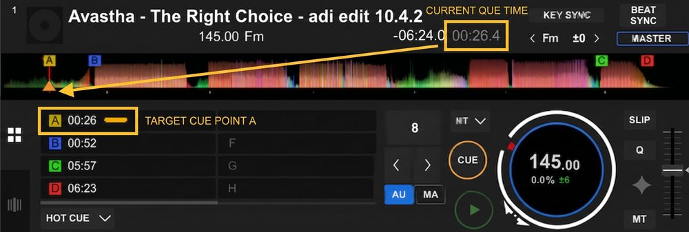
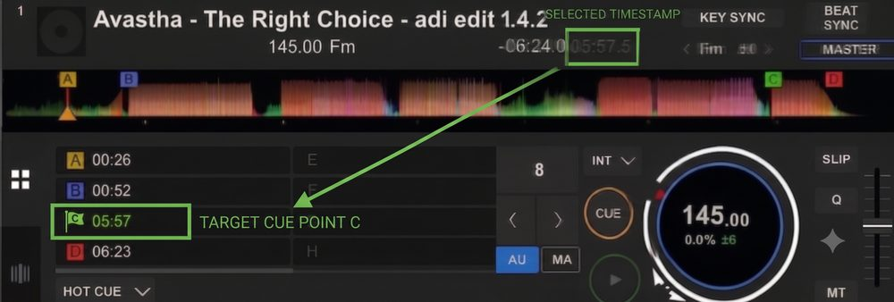

Each user has their own lists. Accounts are made by Adi.
Changes apply live and are saved on this device.
Admin panel — accounts are stored privately on the sync server and never in the public repo. Changes are authorized with your admin login password. Type an existing username to reset its password.
Enter your admin login password to authorize this change.
One-time setup so saving just works. Either paste a fine-grained token (Repository access: only this repo · Permissions → Contents: Read and write) — it stays on this device and you will never be asked again — or set a sync relay URL under Repository settings (then nobody needs a token at all; see README).
Take the times straight from your rekordbox cues. Cue in is where you start the track (hot cue A), and Cue out is where you start the next track (hot cue C) — so the mix time between tracks is counted in the set.

00:26.4
0:26.4

05:57.4
5:57.4
Play Time = Cue out − Cue in (here 5:31.0), and Set time is the running length of the whole set. Time formats: 5:57.4 (rekordbox, tenths), 5:57, 5.57 (5 min 57 s, like the old Excel), 5.57.4 (Excel style + tenths), or 1:02:37. ▶ opens the track in a new tab — a YouTube search for the track name by default, or any link you set with ✎ (YouTube, SoundCloud, …). Rename the list with the ✎ next to its name. Users: Public is open to everyone. Log in (👤 button) with a username and password for your own lists — accounts are made by Adi. Up to 100 lists per user, 500 tracks per list. Lists autosave to this device as you type. Save commits them to GitHub — no setup needed.
5:31.0
5:57
5.57
5.57.4
1:02:37